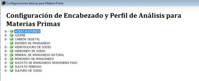
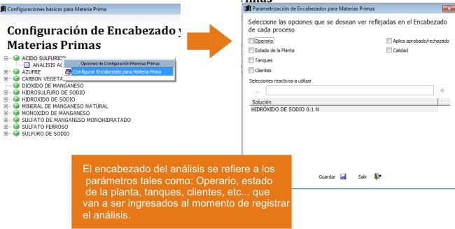
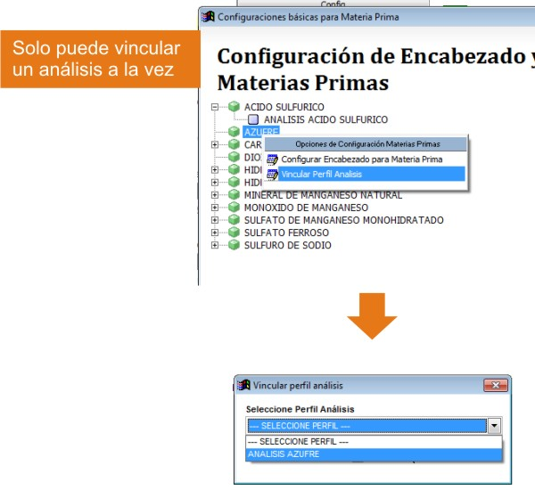

Configuración de encabezado y perfil análisis materia prima¶
Ubicación¶
| Módulo: | Real Q |
|---|---|
| Grupo: | Materia Prima |
| Descripción: | Configuración de encabezado y perfil análisis materia prima |
Introducción¶
En este apartado puede configurar algunas de las opciones que aparecen al momento de registrar el análisis para un ingreso de materia prima.
El encabezado del análisis se refiere a los parámetros tales como: Operario, estado de la planta, tanques, clientes, etc... que van a ser pedidos al momento de registrar el análisis. Además, seleccione los reactivos que usted puede visualizar al momento del registro del análisis.

Modificar encabezado del análisis¶

Ejecute la opción Configuración de encabezado y perfil análisis materia prima
En el listado de materias primas, seleccione una y haga click derecho sobre ella. En el menú emergente escoja la opción “Configuración de encabezado para materia”
- Se desplegará una ventana con los parámetros elegibles:
- Operario
- Estado de la planta
- Tanques
- Clientes
- Acepta aprobado/rechazado
- Calidad
Marque en la casilla de verificación aquellos que considere deban ir en el registro del análisis
Para mostrar un activo en el registro del análisis, presione el botón [...] “Seleccione reactivos a utilizar” Luego haga click en [+] para incluirlo en la lista.
Elegir un perfil de análisis para la materia prima¶

- Ejecute la opción Configuración de encabezado y perfil análisis materia prima - Vea, Perfil de análisis
- En el listado de materias primas, seleccione una y haga click derecho sobre ella. En el menu emergente elija la opción “Vincular perfil análisis”
- En la nueva ventana, seleccione un perfil de la lista y haga click en
Guardar